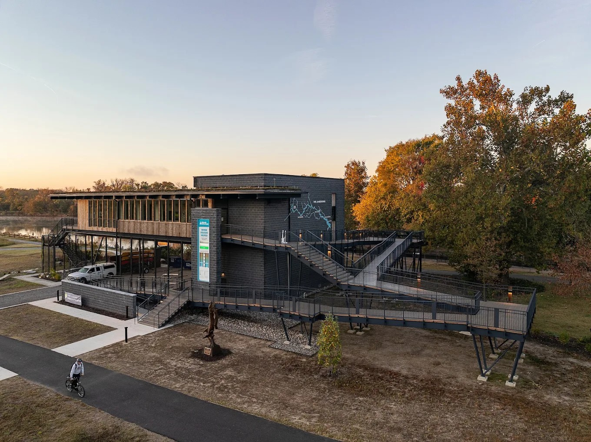

Join us to celebrate Karen
Please join family and friends to remember Karen and celebrate her life with a catered lunch, music, and a display of photographs and personal mementos.
– Eastern
James A. Buzzard River Education Center
2825 Dock Street
Richmond, VA 23223
Subscribe to receive future changes in your calendar app; updates may take time to appear. “Add to Google Calendar” and “Add to Apple Calendar” save a copy that won’t update automatically.
Subscribe in Google Calendar or another app
In Google Calendar on a computer, next to “Other calendars,” choose + → From URL and paste the address below. In other calendar apps, look for “Subscribe to calendar.”
https://tchlux.github.io/karen-lux/celebration.ics
Choose either a subscription or a saved copy to avoid duplicate events. Google Calendar subscription help
The agenda is still being planned and will be shared here when it is ready. Please check back before traveling for the latest celebration and parking details.
Parking & getting there

Parking at the center is limited. Please help keep the closest spaces available for guests who need them and are unable to walk several blocks.
Additional parking is being arranged at the Virginia Holocaust Museum’s lower lot on Dock Street, 2000 Dock Street, Richmond, VA 23223. It is about a 10-minute walk to the center along the Capital Trail and Low Line.
A shuttle from the museum is planned. Lot availability and shuttle details are still being finalized and will be posted here when confirmed.
In Karen’s memory
In lieu of flowers, the family suggests memorial donations to the American Cancer Society.